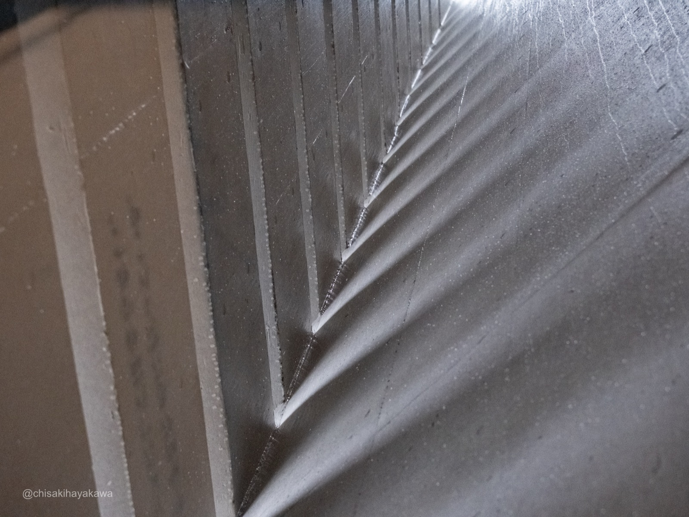
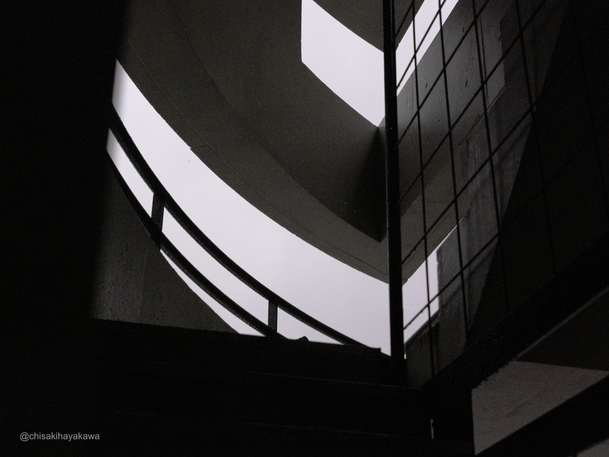

JUDD | Marfa
Swipe to read →

「見えないもの」を知覚するグレーに浮かぶ、桜のピンク
Perceiving the invisibleCherry blossom pink, floating in grey
Untitled, 1967, Galvanized iron
所蔵：公益財団法人大原芸術財団 大原美術館
所蔵：公益財団法人大原芸術財団 大原美術館
雨の日の昼下がり
静かなワタリウム
静かなワタリウム
マーファは雨が降るのだろうか。
そんなことを考えながら
ジャッドの世界に入る
ジャッドの世界に入る
Untitled,
身近な商業素材のそのトタンから
硬い影が落ちている
雨垂れの調べが聞こえる気がした
身近な商業素材のそのトタンから
硬い影が落ちている
雨垂れの調べが聞こえる気がした
しかし、その表面は柔く温かい
たゆたう光を纏っていた
たゆたう光を纏っていた
予期せぬ結晶化がもたらした
桜の絨毯のようなスパングル結晶
桜の絨毯のようなスパングル結晶
春の気配がした
A rainy afternoon
Quiet Watari-Um
Quiet Watari-Um
Does it rain in Marfa?
Thinking about that
as I enter Judd's world
as I enter Judd's world
Untitled,
From that corrugated steel of everyday commerce
hard shadows fall
I thought I heard the rhythm of raindrops
From that corrugated steel of everyday commerce
hard shadows fall
I thought I heard the rhythm of raindrops
Yet its surface was soft and warm
draped in drifting light
draped in drifting light
An unexpected crystallization brought forth
spangle crystals like a carpet of cherry blossoms
spangle crystals like a carpet of cherry blossoms
A hint of spring





私にとって、ここは何もない田舎ではない。世界の中心なんだ。
To me, this isn't the middle of nowhere. It's the center of the world.
Donald Judd, 1993
Exhibition Info
Exhibitionドナルド・ジャッド｜マーファ展JUDD | Marfa
Venueワタリウム美術館 — 東京都渋谷区神宮前3-7-6WATARI-UM, The Watari Museum of Contemporary Art — 3-7-6 Jingumae, Shibuya, Tokyo
Dates2026.02.15 – 06.07
Hours11:00 – 19:00（月曜休館）11:00 – 19:00 (Closed on Mondays)
Admission一般 ¥1,500 / 学生 ¥1,300Adults ¥1,500 / Students ¥1,300
Photo撮影可（受付で確認済み）Photography permitted (confirmed at reception)
Websitewatarium.co.jp